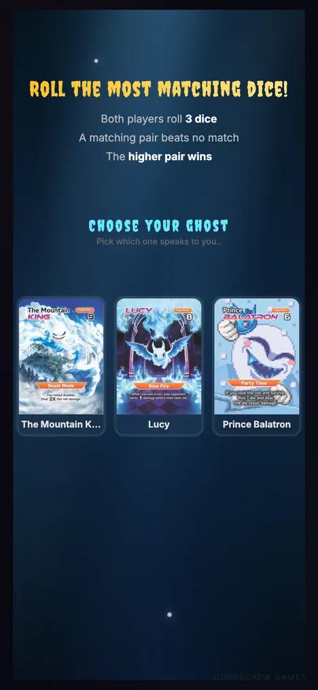
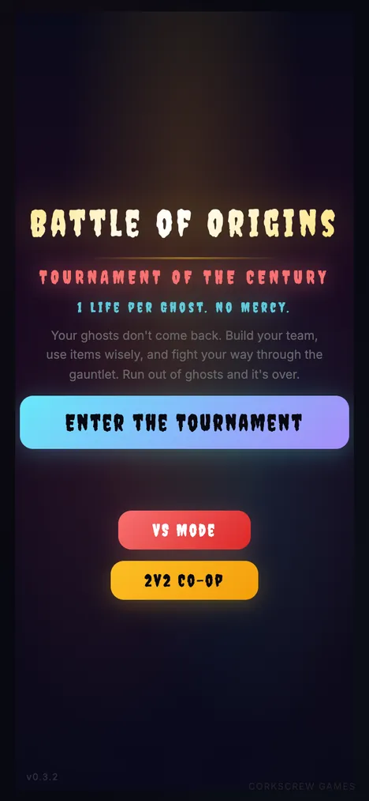
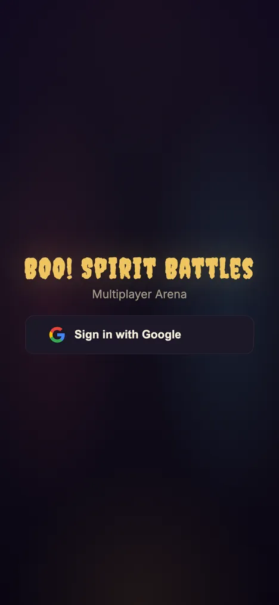
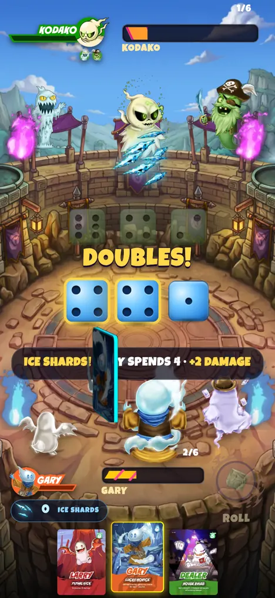
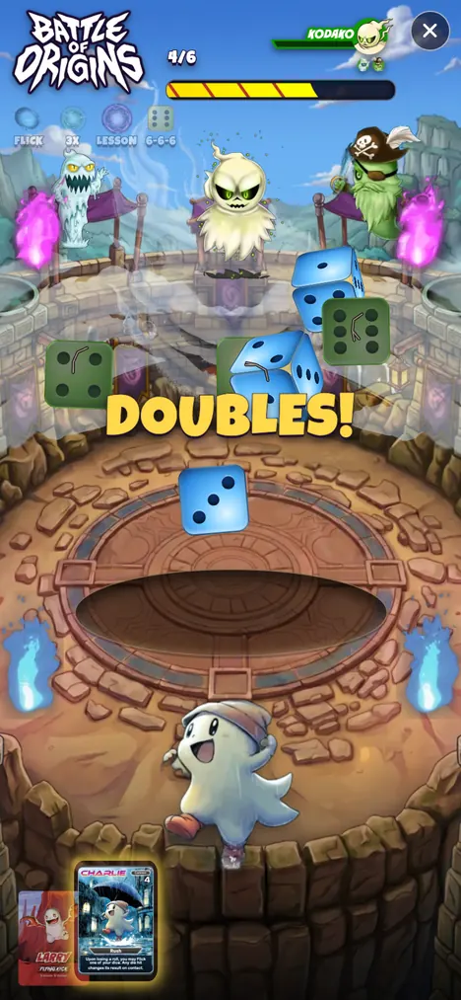

Corkscrew Games · for the Brim team
Every Battle of Origins playable we have made
Five builds, oldest first, from the first concept to the newest prototype. Each one plays right here in the browser. They are built for a phone held upright, and they work on a computer too. Sound comes on with your first tap.

1 · Quick Battle, the original concept
Where the idea started, before any of your art existed. It was put together with AI in a day or two, using card scans and stock sound, so it is rough to look at. It is here because the idea held up: pick a ghost, roll three dice, the most matching dice win. Every build after this one keeps that duel.
- One screen, one fight, about a minute
- Still called Boo! Spirit Battles, the name at the time

2 · Tournament of the Century
The dice duel grown into a whole run, not an ad. You build a team of Spiritkin and fight through a gauntlet of bosses to reach the Mountain King. Each ghost has one life: lose it and it does not come back.
- Reveal and choose your Spiritkin, pick up items, add to your team as you win
- Also has a VS Mode and a 2v2 Co-op
- Made before your art, so it runs on the card scans

3 · Battle Network, Model C
The online version: play against other people, upright on a phone. You choose your Spiritkin, set a loadout, and take on raids.
- Players, badges, a shop and card packs to open
- It asks you to sign in with Google first, so it knows who you are playing as
- Still called Boo! Spirit Battles, the name at the time

4 · Version 1, the playable ad
The first one built from your folder, and the first one made as an ad. Your three folders became three beats: the VS opener, the arena fight (Gary against Kodako's crew), then the Mountain King and your outro with the Kickstarter plate. Your own animation plays all the way through. This is the one that is live today.
- Every play wins the crew's fight and fires Ice Shards at least once
- The Mountain King falls about half the time, so losing to him feels fair and beating him feels earned
- Holds its shape on every phone we tried, the small iPhone SE included
How it got there. A first build on September 11, then seven steps in one evening. Each one is kept, so you can see any change for yourself.
- First build · Sept 11Your art is in, with stand-in motion where your animation will go
- V1Your animation plays where the stand-ins were
- V1.1The animation runs at full speed on a phone
- V1.2Kodako's crew loops made smoother, 24 to 60 frames a second
- V1.3The King's face, the peaks and the flames fixed for every phone shape
- V1.4The King stands in front of the mountains and strikes with his own claw
- V1.5The odds: you always win the first fight, the King falls half the time
- V1.5.1 · liveThe King has 9 health, the same as in the card game

5 · Version 2, "First Throw"
A rebuild around the first twenty seconds. There is no opener video: you are holding and rolling dice in the first second. You lose to the Mountain King once, level up, and come back to beat him.
- Flick: lose a roll and you fling one of your dice into the others to change them (Charlie's Rush)
- New cast: Larry (triples), Charlie (Flick), Buttons (6-6-6), against Kodako and the King
- About 50 seconds end to end. The short cut ends after the first fight, at about 16 seconds
- Still placeholder art: Charlie's cut-out and card, the Buttons sprite, the tutorial finger and the logo